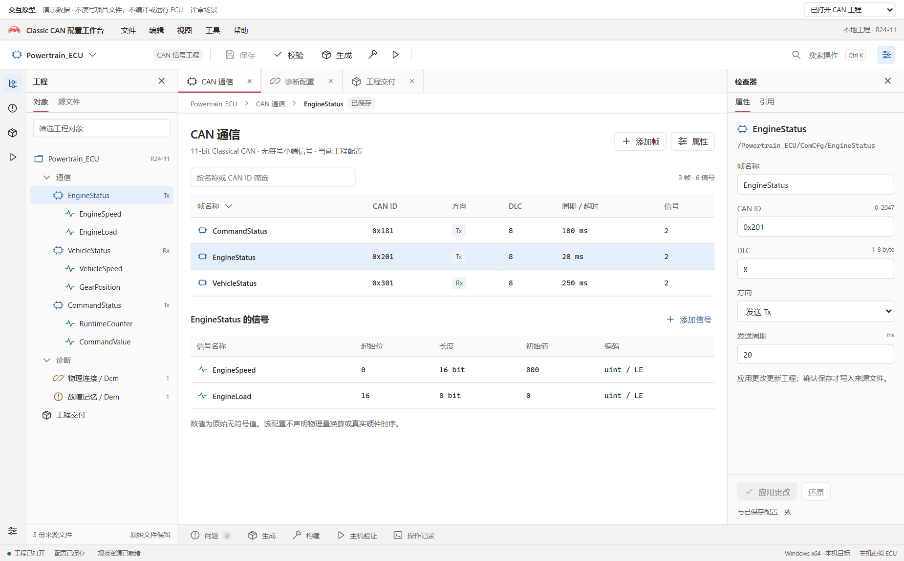
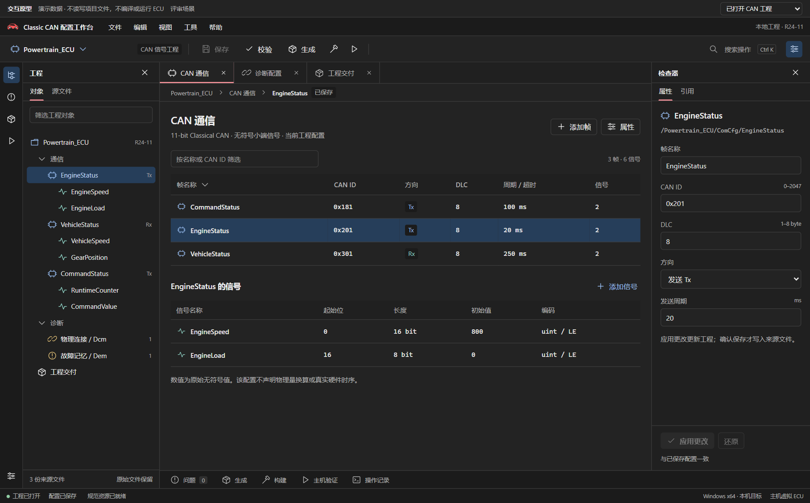

保留 A 的形体，靠近工作台的气质
你更认可 A，但它和工程界面有距离。现在保留 A 的轮廓与珊瑚色系，使用真正透明的图形与随主题变化的灯位；图标有受控亮暗，界面主行动用沉稳珊瑚实色，布局、中性壳层和对象／结果角色不随品牌重做。
珊瑚材质 · 当前原型默认
浅桃红、珊瑚与深莓红构成同一色系的光色层次。图形不带白底，车窗与灯位周围的留白透出界面；浅色用石墨灯位，深色用暖白灯位。既不走 Toolbox 的橙粉紫转色，也不使用绿色适配。

实际浅色界面
实际深色界面
图标尺寸
深色承载面
珊瑚原色 · 保留对照
保留 A 的平面珊瑚原色作为对照。两组界面使用相同的中性布局与珊瑚主行动，便于直接比较图标本身的色层是否值得保留，不把多个变化混在一起。

实际浅色界面

实际深色界面

图标尺寸
深色承载面